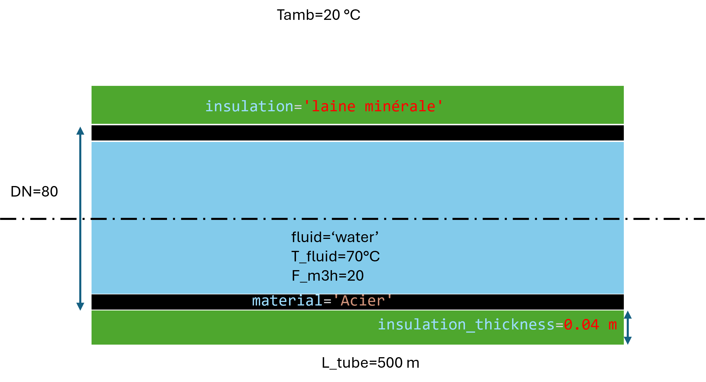
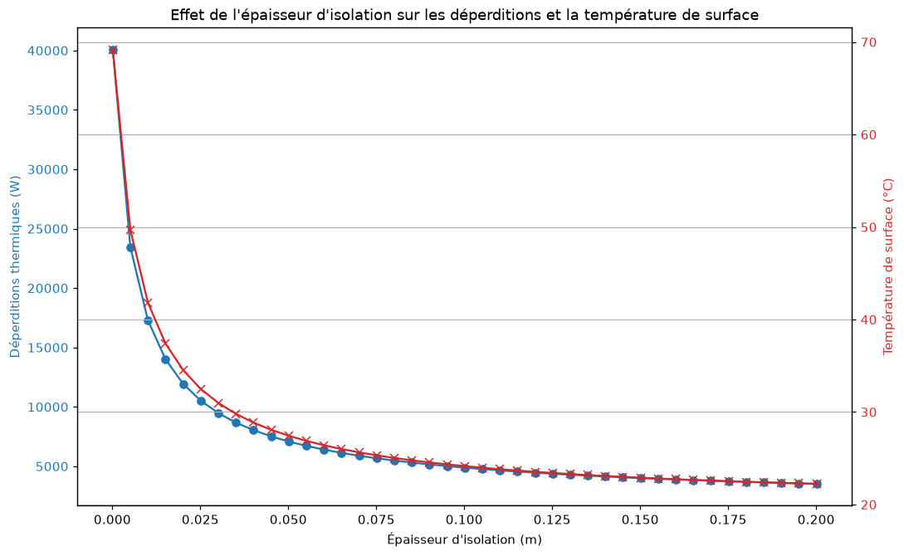

Isolation des tuyaux
Usage
{kind=link}

from HeatTransfer import PipeInsulationAnalysis
# Créer un objet d'analyse d'isolation de tuyau
pipe = PipeInsulationAnalysis.Object(
fluid='water',
T_fluid=70,
F_m3h=20,
DN=80,
L_tube=500,
material='Acier',
insulation='laine minérale',
insulation_thickness=0.04,
Tamb=20
)
# Calculer les déperditions
pipe.calculate()
# Afficher les résultats
print(f"Déperditions totales: {pipe.q_total:.2f} W")
print(f"Température de surface: {pipe.Tc:.2f} °C")
print(pipe.df)
Results
Déperditions totales: 8050.03 W
Surface temperature: 28.87 °C
0
Fluid water
Regime turbulent
T_fluid (°C) 70
v (m/s) 1.080789
F_m3h (m3/h) 20
DN 80.0
di (m) 0.0809
de (m) 0.0889
L_tube (m) 500
Material Acier
Insulation laine minérale
Insulation Thickness (m) 0.04
Emissivity 0.01
Tamb (°C) 20
Humidity (%) 40
Flow Regime turbulent
Tc (°C) 28.868999
Tf (°C) 24.434499
Outer Diameter with Insulation (m) 0.1689
Prandtl Number (Pr) 2.562899
External Surface Area (m²) 265.307276
Rayleigh Number 4226671.100079
Nusselt Number 21.942496
Average Heat Transfer Coefficient (W/m².K) 3.361376
Convective Heat Transfer (W) 7909.350594
Radiative Heat Transfer (W) 140.67688
Total Heat Transfer (W) 8050.027474
Convective Resistance (K/W) 0.001121
Radiative Resistance (K/W) 0.063045
Equivalent Resistance (K/W) 0.001102
Internal Surface Area (m²) 127.077315
Reynolds Number (Re_fluid) 211849.962282
velocity (m/s) 1.080789
Nusselt Number (self.Nu_fluid) 611.002747
Heat Transfer Coefficient (self.h_fluid) 4982.869046
Internal Convective Resistance (K/W) 0.000002
Internal Wall Temperature (°C) 69.987287
External Wall Temperature (°C) 69.982454
Insulation Temperature (°C) 28.868999
Conductive Resistance of Bare Tube (K/W) 0.000001
Le calcul retourne :
Heat loss totales (
q_total) [W]Surface temperature externe (
Tc) [°C]DataFrame détaillé incluant :
Properties of the fluid (viscosité, conductivité, densité, Cp)
Régime d’écoulement (laminaire/turbulent)
Numbers adimensionnels (Reynolds, Prandtl, Nusselt, Rayleigh)
Coefficients de transfert thermique [W/m²·K]
Résistances thermiques [K/W]
Temperatures aux interfaces [°C]
Déperditions by convection et rayonnement [W]
Paramètres possibles
Matériaux de tuyau disponibles (material) :
'Cuivre'(λ = 380 W/m·K)'Plomb'(λ = 35 W/m·K)'Acier'(λ = 50 W/m·K)'Aluminium 99%'(λ = 160 W/m·K)'Fonte'(λ = 50 W/m·K)'Zinc'(λ = 110 W/m·K)
Matériaux d’isolation disponibles (insulation) :
'aucun isolant'(λ = 0 W/m·K)'laine minérale'(λ = 0.04 W/m·K)'polyuréthanne PUR'(λ = 0.03 W/m·K)'polystyrène'(λ = 0.036 W/m·K)'polyéthylène'(λ = 0.038 W/m·K)'Liège (ICB)'(λ = 0.05 W/m·K)'Laine minérale (MW)'(λ = 0.045 W/m·K)'Polystyrène expansé (EPS)'(λ = 0.045 W/m·K)'Polyéthylène extrudé (PEF)'(λ = 0.045 W/m·K)'Mousse phénolique – revêtu (PF)'(λ = 0.045 W/m·K)'Polyuréthane – revêtu (PUR/PIR)'(λ = 0.035 W/m·K)'Polystyrène extrudé (XPS)'(λ = 0.04 W/m·K)'Verre cellulaire (CG)'(λ = 0.055 W/m·K)'Perlite (EPB)'(λ = 0.06 W/m·K)'Vermiculite'(λ = 0.065 W/m·K)'Vermiculite expansée (panneaux)'(λ = 0.09 W/m·K)
Diameters nominaux (DN) disponibles :
DN de 6 à 1050 mm (voir table complète in le code source)
Analyse paramétrique de l’épaisseur d’isolant
import matplotlib.pyplot as plt
from HeatTransfer import PipeInsulationAnalysis
# Simulation de l'effet de l'épaisseur d'isolation sur les déperditions
insulation_thicknesses = [0.0001 + 0.005 * i for i in range(41)] # Épaisseurs de 0.0001m à 0.2001m
heat_losses = []
surface_temperatures = []
for thickness in insulation_thicknesses:
pipe = PipeInsulationAnalysis.Object(
fluid='water',
T_fluid=70,
F_m3h=20,
DN=80,
L_tube=500,
material='Acier',
insulation='laine minérale',
insulation_thickness=thickness,
Tamb=20
)
pipe.calculate()
heat_losses.append(pipe.q_total)
surface_temperatures.append(pipe.Tc)
# Tracer les résultats
fig, ax1 = plt.subplots(figsize=(10, 6))
color = 'tab:blue'
ax1.set_xlabel('Épaisseur d\'isolation (m)')
ax1.set_ylabel('Déperditions thermiques (W)', color=color)
ax1.plot(insulation_thicknesses, heat_losses, marker='o', color=color, label='Déperditions (W)')
ax1.tick_params(axis='y', labelcolor=color)
ax2 = ax1.twinx() # Créer un second axe y partageant le même axe x
color = 'tab:red'
ax2.set_ylabel('Température de surface (°C)', color=color)
ax2.plot(insulation_thicknesses, surface_temperatures, marker='x', color=color, label='Température de surface (°C)')
ax2.tick_params(axis='y', labelcolor=color)
fig.tight_layout()
plt.title('Effet de l\'épaisseur d\'isolation sur les déperditions et la température de surface')
plt.grid(True)
plt.show()
{kind=link}

Explication du model
Ce model calcule les heat loss d’un insulated pipe transportant un fluid chaud ou froid.
Le calcul prend en compte :
Convection interne : Transfer between le fluid et la paroi interne du tuyau
Conduction in le tuyau : Transfer à travers la paroi métallique
Conduction in l’isolant : Transfer à travers l’isolation
Convection externe : Transfer between la surface et l’air ambiant (convection naturelle)
Rayonnement : Émission thermique to l’environnement
Le model détermine automatiquement :
Le régime d’écoulement (laminaire ou turbulent)
Les propriétés thermophysiques of the fluid via CoolProp
Les coefficients de transfert thermique appropriés
La surface temperature by itération (équilibre thermique)